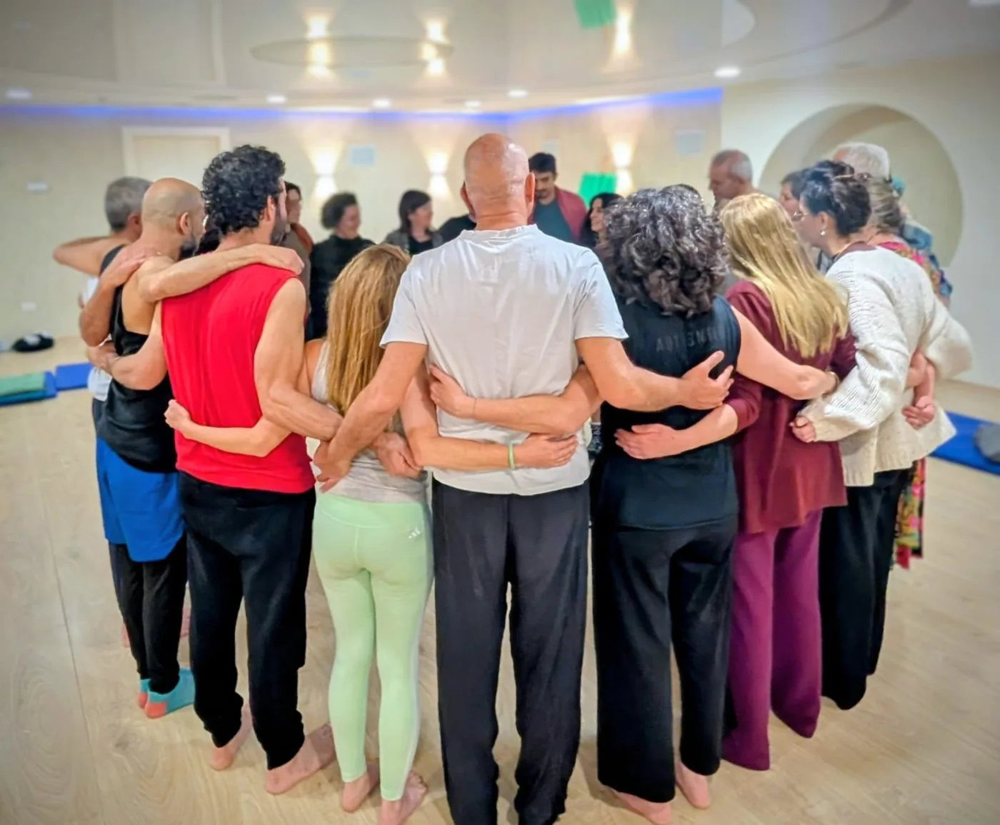
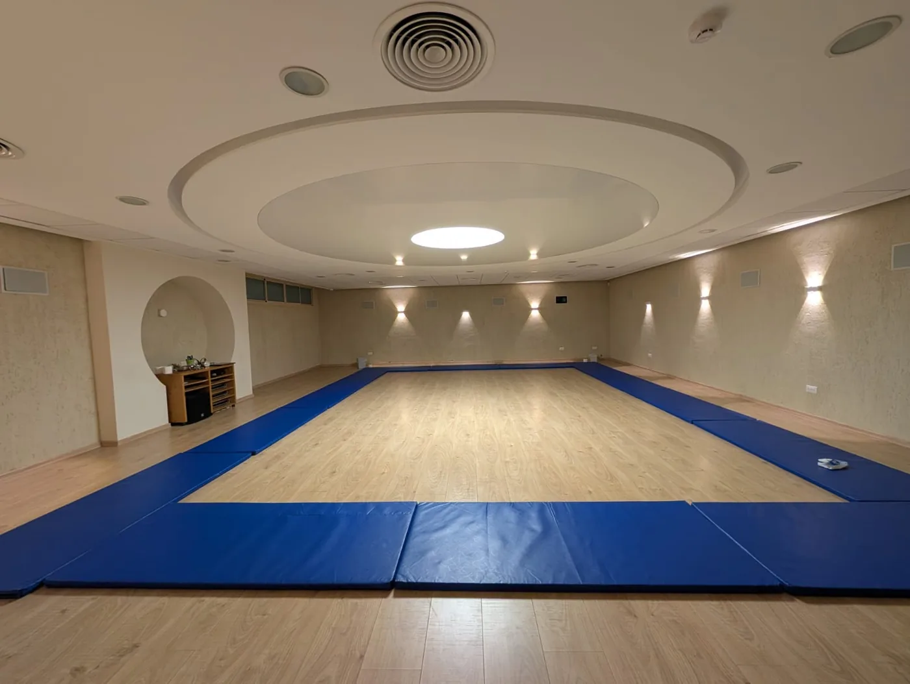
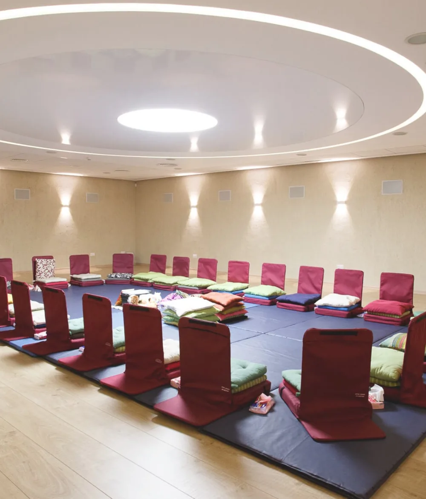
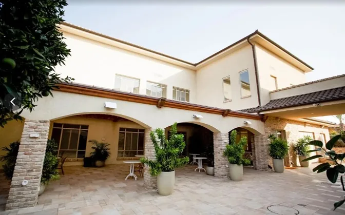
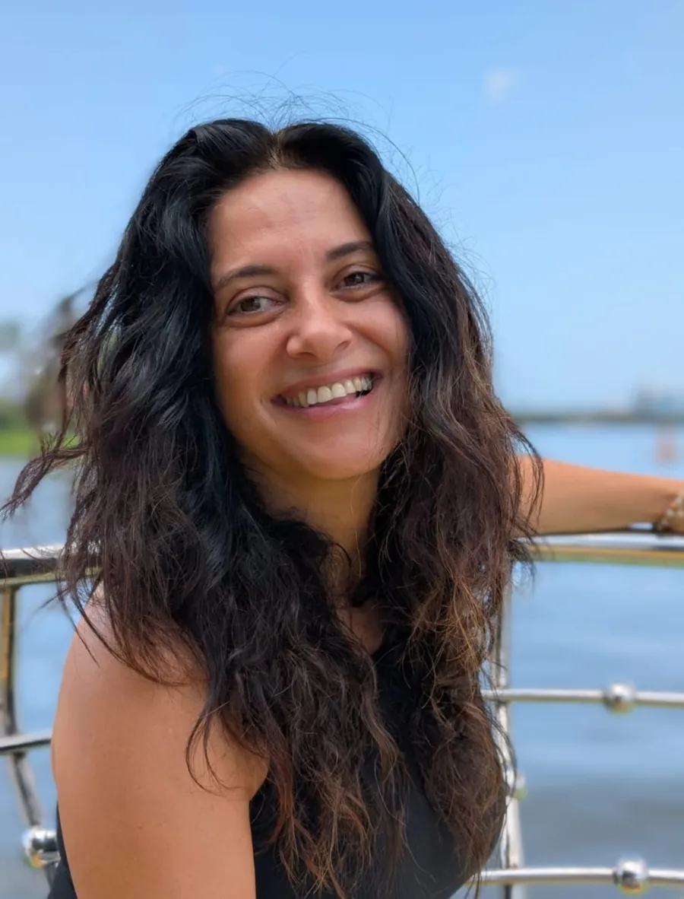

בשביל השקט הנפשי שלך
מכעס לאהבה.
מבכי לצחוק.
יום אחד, 12 שלבים.
ריטריט יומי של ביטוי רגשי, קול ותנועה, הכל בליווי מוזיקה ובקבוצה. מרחב בטוח לפרוק בו הכל ולצאת חופשיים וקלילים.
גם אם זה עולם חדש לגמרי, מוזמנים.ות. מי שלא בטוח.ה מוזמן.ת קודם לשוחח עם טל.

רוצים.ות
- לצחוק?
- לבכות?
- לצעוק?
- לרקוד?
- להשמיע קול?
- לצאת מאזורי נוחות?
- להניע את הקונדליני?
- לעצור ולהתבונן פנימה?
- לפרוק?
אם התשובה היא כן, מקומכם.ן איתנו.
מה זה AUM?
רגש שלא עובד נשאר בגוף
ביטוי רגשי לא מעובד יושב בתוך מערכת העצבים. אי אפשר "לדבר" את מה שנשאר בבטן, צריך לפרוק אותו. מדיטציית AUM בנויה בדיוק בשביל זה: עבודה אישית אינטנסיבית ועמוקה בליווי מוזיקה, תנועה וקול, שמעבירה את הגוף דרך פורקן פיזי אל שקט עמוק.
מי שמכיר.ה ואוהב.ת את המדיטציות האקטיביות של אושו עשוי.ה להתאהב גם בזו. במרחב ה-AUM לא צריך להיות "ילדים טובים", מנומסים או מאופקים. מותר לצעוק, לשחרר, להשתולל ולבכות, בלי שישפטו אתכם.ן ובלי לפגוע באיש.
מטרת מדיטציית ה-AUM היא להפוך במודע מתח ורגשות שליליים לאנרגיה יצירתית וחיובית, ולטיפוח רווחה אישית ושלום פנימי. המטרה הסופית היא העמקת האהבה והחברות, עם עצמכם ועם אחרים.
וירש, מפתח השיטה
המסע
מכונת כביסה לעולם הרגש
12 שלבים, כל אחד כרבע שעה. עוברים בתחנות, נותנים לרגש לבוא לידי ביטוי במלואו, ויוצאים בסוף המסע נקיים, קלילים ומחודשים.
- 1
"אני שונא אותך"
שחרור כעס באמצעות קול ומחוות גוף
- 2
"אני אוהב אותך"
החזקת ידיים, קשר עין וחיבוק
- 3
Second Wind
כושר התמדה, עמידה באתגרי החיים
- 4
קונדליני
שקשוק הגוף להנעת אנרגיות הקונדליני
- 5
בית משוגעים
לאבד שליטה במרחב מוגן ובטוח
- 6
ריקוד החופש
תנועה אותנטית בעיניים עצומות
- 7
בכי
חיבור לכאב ולפגיעות
- 8
צחוק
חיבור להומור ולקלילות
- 9
ריקוד האוהבים
חיבור לארוס ולתשוקה
- 10
אום
החזקת ידיים והמהום המנטרה AUM לתדר משותף
- 11
ישיבה שקטה
התבוננות פנימית, הקשבה לגוף
- 12
נמסטה
הוקרת תודה

למה יום שלם
זמן הוא כבוד לתהליך
המדיטציה עצמה נמשכת שעתיים וחצי בלבד. אבל בעבודת עומק, מה שקורה לפניה ואחריה חשוב לא פחות, ולכן AUM כאן הוא ריטריט יומי: הסברים והדגמות לפני, ארוחה משותפת באמצע ומעגל שיתוף ואינטגרציה בסוף.
המרחב הזה הוא מה שמאפשר להגיע זרים לגמרי, ולצאת בסוף היום כשבט אחד מחובר. כשנותנים לתהליך זמן, השינוי הופך לעמוק ומשמעותי.
איך נראה היום
חמש תחנות, מהבוקר ועד הערב
-
נחיתה רכה
עם קפה ומאפה
-
הסבר והדגמות
לשמירת המרחב בטוח ומוגן
-
סדנת AUM
חוויה עוצמתית ועמוקה דרך 12 השלבים, לחוד ויחד
-
ארוחת צהריים
זמן להכיר מקרוב, לחלוק חוויות ולהנות מאוכל מנחם
-
מעגל שיתוף
שלב האינטגרציה: מה למדתי על עצמי, איך נכנסתי ואיך אני יוצא.ת, איך זה מרגיש במיינד, בגוף וברגש, מה אקח איתי לחיים האמיתיים
האם זה יותר מדי בשבילי?
מרחב בטוח, עם גבולות ברורים
האום אמנם הוא תהליך אינטנסיבי, אנרגטי ודינמי, ואין לדעת מה תרגישו, איפה תעופו ואיפה תרגישו תקועים. הוא מזמין לצאת מאזורי נוחות ולהתמסר בטוטאליות לתהליך. ועם זאת, זה תהליך מובנה בתוך מרחב עם גבולות שנשמרים.
- הסבר ארוך והדגמות טכניות לפני שמתחילים
- מנחה מקצועית וצוות הלפרים מנוסה מבית "כאן ועכשיו"
- כל אחד ואחת בקצב שלהם, בגבולות שלהם, בלי ביקורת ושיפוטיות
- מעגל שיתוף בסוף היום לעיבוד מה שעלה

המקום
וילה מפוארת בגדרה, ואולם שנבנה לזה

הריטריט מתקיים בבית "כאן ועכשיו", פינס 44, גדרה. האולם יעודי, מרווח, חדיש, ממוזג ומוגבר, עם תאורה משתנה ורצפת פרקט. חדר אוכל יפיפה ורחב ידיים יעמדו לרשותנו, יחד עם חצר חיצונית מוצלת.

מי מלווה אתכם
טל אמיתי-לביא
פגשתי את סדנת AUM בתקופה משברית בחיי, של גירושין ופירוק בית ומשפחה. תירגלתי אותה אחת לחודש במשך שנים, והיא שימשה לי כלי מרכזי לחזור לעצמי, לגוף, לביטוי הרגשי ולחיים מלאים.
את מתנת ה-AUM אני רוצה להעניק גם לכם.ן
מאז ומתמיד הייתה לי סקרנות ללמוד על עצמי, שנים רבות דרך עולמות הפסיכותרפיה, וב-25 השנים האחרונות דרך עבודת גוף ומדיטציות. אני מגיעה עם ניסיון עשיר בהנחיית סדנאות ובהובלת תהליכי עומק, ארגז כלים עשיר, עיניים טובות ואמונה עמוקה שהשינוי נמצא בידיים שלנו.
מנחה מקצועית, בליווי צוות הלפרים מנוסה מבית "כאן ועכשיו"
שאלות נפוצות
לפני שמחליטים
האם צריך ניסיון קודם?
לא חובה. יש יתרון למי שרגיל.ה לעבוד עם הגוף בתנועה, למי שעולם הרגש נגיש לו.ה ולמי שחווה מדיטציות אקטיביות. למי שהעולם הזה זר לגמרי, מומלץ לשוחח קודם עם טל לבדיקת התאמה. מנוסים.ות וחדשים.ות כאחד מוזמנים.ות להגיע עם ראש פתוח, סקרנות ורצון לצאת מאזורי נוחות. ההגעה להסברים ולהדגמות בפתיחת הריטריט חובה לכולם.ן.
האם התהליך יכול להיות "יותר מדי" עבורי?
האום מזמין לצאת מאזורי נוחות ולבוא בכל הכוח, אבל זה תהליך מובנה במרחב בטוח עם גבולות ברורים ושמורים. יש הסבר ארוך לפני המדיטציה, הדגמות טכניות, מנחה מקצועית וצוות הלפרים מנוסה לאורך כל הדרך.
במה זה שונה מסדנה רגילה?
סדנת AUM רגילה היא סשן מובנה של כשעתיים וחצי. כאן יש יום מלא, כ-7 שעות, עם הסברים, ארוחה משותפת ומעגל שיתוף ואינטגרציה בסוף. הזמן הזה הוא כבוד לתהליך, ובו קורה השינוי העמוק.
מה מקבלים בסוף?
גמישות מחשבתית, שחרור, קלילות ויותר דרגות חופש. הריטריט מאפשר להשתחרר מדפוסים ומערכות הגנה אוטומטיות, ולאמץ דרכי פעולה אחרות בחיים.
כמה זה עולה?
המחיר והמועד מתעדכנים כאן. אפשר לשאול את טל ישירות.
מקומך איתנו
רוצים.ות להצטרף?
כתבו לטל בוואטסאפ או התקשרו אליה, והיא תשמח לענות על כל שאלה ולשמור לכם.ן מקום.
כתבו לטל בוואטסאפטל אמיתי-לביא052-8497146